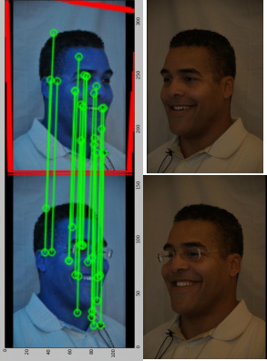

<div class="portfolio-desc">

	<h4 class="thin-title">Twins Recognition
		<a href="#" class="close-overlay">x</a>
	</h4>

	<strong class="about-meta">
		<i class="fa fa-tag"></i>Photo
	</strong>

	<strong>Overview</strong>
	<p>In our project, we used SIFT algorithm to extract the image features and RANSAC algorithm for feature matching. We mainly focused on finding the best performance of SIFT + RANSAC face recognition system under different conditions.   Each image is a metadata and has eight different features (date, gender, race, year, weather, glasses, expression, yaw). For a normal face recognition scenario in a public dataset, all of these features are useful and distinguishable for recognizing face. It becomes, however, way more challenging to recognize (identical) twin faces only using race or gender information.  
	</p>

	<p>For more information please see our <a href="twins_project.pdf">paper</a>
	</p>

</div>